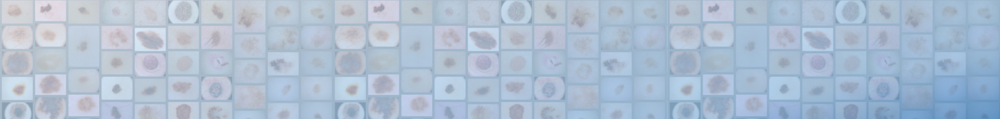

[ Introduction | Invited Speakers | Important Dates | Paper Submission | Datasets | Program Schedule | Organizers ]
10/20/2022: Papers/slides added10/18/2022: Program schedule finalized
09/02/2022: Program schedule added
08/23/2022: Invited speaker biographies added
08/21/2022: Program committee updated
06/20/2022: Important dates updated
05/03/2022: Datasets updated
05/02/2022: Important dates updated
04/23/2022: Workshop format updated
04/05/2022: Venue and important dates updated
02/22/2022: Website launched
Seventh
ISIC Skin Image Analysis Workshop
@ ECCV 2022
Hosted by the International Skin Imaging Collaboration (ISIC)
Introduction
Skin is the largest organ of the human body, and is the first area of a patient assessed by clinical staff. The skin delivers numerous insights into a patient’s underlying health: for example, pale or blue skin suggests respiratory issues, unusually yellowish skin can signal hepatic issues, or certain rashes can be indicative of autoimmune issues. In addition, dermatological complaints are also among the most prevalent in primary care (Lowell et al., 2001). Images of the skin are the most easily captured form of medical image in healthcare, and the domain shares qualities to standard computer vision datasets, serving as a natural bridge between standard computer vision tasks and medical applications. However, significant and unique challenges still exist in this domain. For example, there is remarkable visual similarity across disease conditions, and compared to other medical imaging domains, varying genetics, disease states, imaging equipment, and imaging conditions can significantly change the appearance of the skin, making localization and classification in this domain unsolved tasks.
This workshop will serve as a venue to facilitate advancements and knowledge dissemination in the field of skin image analysis, raising awareness and interest for these socially valuable tasks. Invited speakers include major influencers in computer vision and skin imaging, and authors of accepted papers.
Lowell et al. “Dermatology in Primary Care: Prevalence and Patient Disposition,” Journal of the American Academy of Dermatology, vol. 45, no. 2, pp. 250–255, 2001.
Topics of interest include:
- Computer Vision in Dermatology and Primary Care
- Few-Shot Learning for Dermatological Conditions
- Skin Analysis from Dermoscopic Images
- Skin Analysis from Clinical Photographs
- Skin Analysis from Video
- Skin Analysis from Total-Body Photography and 3D Skin Reconstructions
- Skin Analysis from Confocal Microscopy
- Skin Analysis from Optical Coherence Tomography (OCT)
- Skin Analysis from Histopathological Images
- Skin Analysis from ex-vivo and Fluorescence Microscopy
- Skin Analysis from Multi-Modal Data Sources
- Explainable Artificial Intelligence (XAI) Related to Skin Image Analysis
- Algorithms to Mitigate Class Imbalance
- Uncertainty Estimation Related to Skin Image Analysis
- Human-Computer Interaction & Application Workflows for Skin Image Analysis
- Robustness to Bias from Clinical and User-Originating Photography
- Assessing
and Creating Fairness of Skin Analysis in Underrepresented Groups
- Best Paper Award
- Honorable Mention Award
Invited Speakers
The workshop will feature several prominent names in the field of skin image analysis, including:
|
|
Dr. Liu received her Ph.D. in Computer Science from Vanderbilt University (USA) in 2016. She is currently a team lead for dermatology AI effort at Google Research (USA), with a focus on building AI assistant tools to improve the world’s access to accurate dermatological information and care for everyone. She also serves as a co-chair for the ISIC workshops and a guest editor for Medical Image Analysis special issue on skin image analysis. Liu has conducted research in CV and ML, with an emphasis on medical image analysis, image-guided surgery, and HCI, and published 25+ papers in reputable venues. |
|
|
Dr. Valle received his Ph.D. in Computer Science from the University of Cergy Pontoise (France) in 2008. He is a professor at the School of Electrical and Computing Engineering at the State University of Campinas (Brazil). He has published 70+ works in refereed journals and conferences on the topics of Multimedia Information Retrieval, Content-based Information Retrieval, Machine Learning, and Computer Vision. He is currently focused on Deep Learning and the application of Machine Learning in Computer-Aided Diagnosis. |
|
|
Dr. Rotemberg received her M.D./Ph.D. from Duke University (USA) with a Ph.D. in Biomedical Engineering focusing on elastic imaging. She is currently a dermatologist at Memorial Sloan Kettering Cancer Center (USA), where she directs the imaging informatics program in the dermatology service and sees patients at high risk for skin cancer. Her research interests include dermatology imaging standards, high-resolution skin imaging, clinical photography workflows, and artificial intelligence for diagnosis. |
Important Dates
| July 17, 2022: | Workshop Paper Submission Deadline (11:59 am Pacific Time) |
| August 7, 2022: | Author Notifications |
| August 21, 2022: | Camera-Ready Submission Deadline (11:59 am Pacific Time) |
| October 23, 2022: | Virtual Workshop @ ECCV 2022 (14:00-18:29 Israel Daylight Time) |
Paper Submission
For paper submissions, ECCV guidelines are followed. Accepted papers will be published in the ECCV Workshop Proceedings and archived in the SpringerLink digital library.
Public Datasets for Skin Image Analysis Research
- Derm7pt: Over 2,000 dermoscopic and clinical images of skin lesions with 7-point checklist criteria and diagnostic category information.
- Dermofit Image Library: 1,300 clinical images of skin lesions with diagnostic category information and segmentation masks.
- Diverse Dermatology Images: 656 clinical images of skin lesions with diverse skin tone representation and diagnostic category information.
- Fitzpatrick 17k: 16,577 clinical images with skin condition labels and skin type labels based on the Fitzpatrick scoring system.
- ISIC 2018 / ISIC 2019 / ISIC 2020: The ISIC has organized the world’s largest repository of dermoscopic images of skin (157,000+ images, 69,000+ of which are publicly available) to support research and development of methods for segmentation, feature extraction, and classification. These datasets are snapshots used for the 2018, 2019, and 2020 ISIC melanoma detection challenges. See also the HAM10000 and BCN20000 datasets.
- MED-NODE: 170 clinical images of skin lesions with diagnostic category information.
- PAD-UFES-20: Over 2,200 clinical images of skin lesions with associated metadata.
- PH2: 200 dermoscopic images of melanocytic lesions with detailed annotation.
- SD-128 / SD-198 / SD-260: 6,584 clinical photographs covering 128/198/260 distinct skin disorders with associated metadata.
Program Schedule
Sunday, October 23, 14:00-18:29 IDT, WWW
| 14:00: | Opening Remarks (Live) (Philipp Tschandl) [Video] |
| 14:05: | Invited Talk 1: Using AI to Improve Access to Accurate Information & Care in Dermatology (Yuan Liu) [Video] [Slides] |
| 14:35: | Oral Presentation 1 (Live): Artifact-Based Domain Generalization of Skin Lesion Models. Alceu Bissoto (The State University of Campinas, Brazil); Catarina Barata (Instituto Superior Técnico, Portugal); Eduardo A. do Valle Junior (The State University of Campinas, Brazil); Sandra Avila* (The State University of Campinas, Brazil) [Paper] [Video] [Slides] |
| 14:56: | Oral Presentation 2 (Live): Skin_Hair Dataset: Setting the Benchmark for Effective Hair Inpainting Methods for Improving the Image Quality of Dermoscopic Images. Joanna Jaworek-Korjakowska* (AGH University of Science and Technology, Poland); Anna Wójcicka (AGH University of Science and Technology, Poland); Dariusz Kucharski (AGH University of Science and Technology, Poland); Andrzej Brodzicki (AGH University of Science and Technology, Poland); Connah Kendrick (Manchester Metropolitan University, England); Bill Cassidy (Manchester Metropolitan University, England); Moi Hoon Yap (Manchester Metropolitan University, England) [Paper] [Video] [Slides] |
| 15:17: | Break |
| 15:22: | Invited Talk 2 (Live): Skin-Lesion Analysis: Three Proposals for the Decade (Eduardo Valle) [Video] [Slides] |
| 15:52: | Oral Presentation 3 (Live): An Evaluation of Self-Supervised Pre-Training for Skin-Lesion Analysis. Levy Chaves (The State University of Campinas, Brazil); Alceu Bissoto (The State University of Campinas, Brazil); Eduardo A. do Valle Junior (The State University of Campinas, Brazil); Sandra Avila* (The State University of Campinas, Brazil) [Paper] [Video] [Slides] |
| 16:13: | Oral Presentation 4 (Live): FairDisCo: Fairer AI in Dermatology via Disentanglement Contrastive Learning. Siyi Du* (The University of British Columbia, Canada); Ben Hers (The University of British Columbia, Canada); Nourhan Bayasi (The University of British Columbia, Canada); Ghassan Hamarneh (Simon Fraser University, Canada); Rafeef Garbi (The University of British Columbia, Canada) [Paper] [Video] [Slides] |
| 16:34: | Break |
| 16:39: | Invited Talk 3: Clinical-Translational Potential of Dermatology Artificial Intelligence (Veronica Rotemberg) [Video] [Slides] |
| 17:09: | Oral Presentation 5 (Live): CIRCLe: Color Invariant Representation Learning for Unbiased Classification of Skin Lesions. Arezou Pakzad (Simon Fraser University, Canada); Kumar Abhishek (Simon Fraser University, Canada); Ghassan Hamarneh (Simon Fraser University, Canada) [Paper] [Video] [Slides] |
| 17:30: | Break |
| 17:35: | Panel Discussion (Live) [Video] Moderators: Catarina Barata, Philipp Tschandl, Marc Combalia Panelists: Alceu Bissoto (The State University of Campinas, Brazil); Allan Halpern (Memorial Sloan Kettering Cancer Center, USA); Joanna Jaworek-Korjakowska (AGH University of Science and Technology, Poland); Eduardo Valle (The State University of Campinas, Brazil) |
| 18:24: | Closing Remarks (Live) (Marc Combalia) |
Organizers
Sponsors:
Workshop Organizers:
- M. Emre Celebi, Ph.D. (University of Central Arkansas, Conway, AR, USA)
- Catarina Barata, Ph.D. (Instituto Superior Técnico, Lisbon, Portugal)
- Allan Halpern, M.D. (Memorial Sloan Kettering Cancer Center, New York City, NY, USA)
- Philipp Tschandl, M.D. Ph.D. (Medical University of Vienna, Vienna, Austria)
- Marc Combalia, M.Sc. (Hospital Clínic of Barcelona, Barcelona, Spain)
- Yuan Liu, Ph.D. (Google Health, Palo Alto, CA, USA)
Steering Committee:
- Noel C. F. Codella, Ph.D. (Microsoft, Redmond, WA, USA)
- Anthony Hoogs, Ph.D. (Kitware, Clifton Park, NY, USA)
- Yun Liu, Ph.D. (Google Health, Palo Alto, CA, USA)
- Dale Webster, Ph.D. (Google Health, Palo Alto, CA, USA)
Program Committee:
- Kumar Abhishek, Simon Fraser University, Canada
- Euijoon Ahn, University of Sydney, Australia
- Lei Bi, University of Sydney, Australia
- Alceu Bissoto, University of Campinas, Brazil
- Sandra Avila, University of Campinas, Brazil
- ZongYuan Ge, Monash University, Australia
- Ghassan Hamarneh, Simon Fraser University, Canada
- Joanna Jaworek‐Korjakowska, AGH University of Science and Technology, Poland
- Jeremy Kawahara, Simon Fraser University, USA
- Jinman Kim, University of Sydney, Australia
- Sinan Kockara, University of Central Arkansas, USA
- Kivanc Kose, Memorial Sloan Kettering Cancer Center, USA
- Tim K. Lee, University of British Columbia, Canada
- Amirreza Mahbod, Medical University of Vienna, Austria
- Eduardo Valle, University of Campinas, Brazil
- Moi Hoon Yap, Manchester Metropolitan University, UK
Contact Email:
- workshop@isic-archive.com
© 2022, International Skin Imaging Collaboration (ISIC). All rights reserved. Design: HTML5 UP